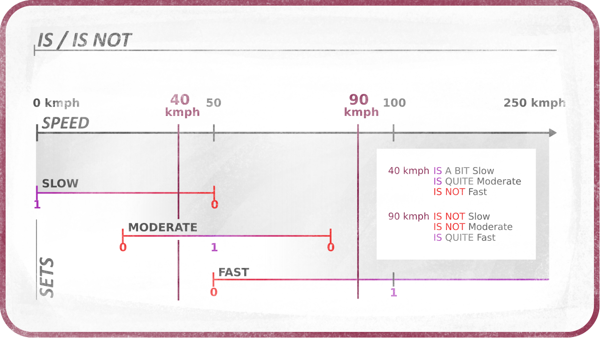

Fuzzification
Fuzzification is the process of getting a precise, crisp value which could be used in Boolean Logic (comparing it to other values), and turning it into a fuzzy value, i.e. a quantified value compared to a set (or several sets) of values.
For example, let’s take the speed of a car. 87kmph is a crisp value. With Fuzzy Logic, we are not going to compare it to other crisp values, but we want to quantify it, i.e. be able to answer these questions: Is it fast? Is it slow? The answer being fuzzy too and not simply true or false - we are not going to just say that this speed is fast because it is more than 50kmph, we need to quantify how fast it is.
In this case, what we need to do is define what fast and slow mean to be able to answer the question. And fast and slow are not single values, they are sets of values which are more or less fast and slow.

Fuzzification is just that: defining sets of values.
Sets
A set of values associates to every single value a truthiness or veracity which defines how much the value is included in the set. Usually, this veracity is implemented as a value in the range [0, 1] where 0 means the value is not at all in the set, and 1 that the value is exactly what the set defines.
Back to the speed example, fast can be all values which are higher than 50kmph, 250kmph being the fastest one, while slow may represent values under 50kmph, the slowest one being 0kmph.
As you can see, sets can overlap, and it is actually better if they overlap to be able to precisely quantify any crisp value.
45kmph is at once just a little bit fast and slightly slow.
Operators: IS and IS NOT

This defines the Fuzzy operators IS and IS NOT: they are the operators which get the veracity of a crisp value in a given set, like in the statement IF 87kmph IS fast or IF 87kmph IS slow or IF 87kmph IS NOT slow
They check the inclusion of the value in the given set.